此卦信息不全，没有时间。
天同问辛丑年财运。升之恒。天同卦.md
时间: 2021-02-16 3时49分
干支: 辛丑年庚寅月乙未日 (旬空: 辰巳 )
地风升 雷风恒
六神 伏神 本 卦 变 卦
玄武 ▅▅ ▅▅ 官鬼酉金 ▅▅ ▅▅ 妻财戌土 应
白虎 ▅▅ ▅▅ 父母亥水 ▅▅ ▅▅ 官鬼申金
腾蛇 子孙午火▅▅ ▅▅ 妻财丑土 世Ｘ→ ▅▅▅▅▅ 子孙午火
勾陈 ▅▅▅▅▅ 官鬼酉金 ▅▅▅▅▅ 官鬼酉金 世
朱雀 兄弟寅木▅▅▅▅▅ 父母亥水 ▅▅▅▅▅ 父母亥水
青龙 ▅▅ ▅▅ 妻财丑土 应 ▅▅ ▅▅ 妻财丑土
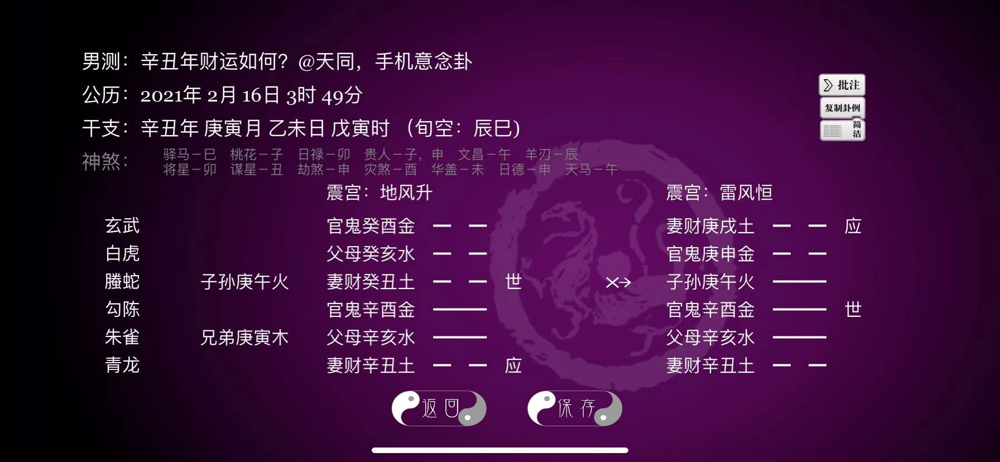
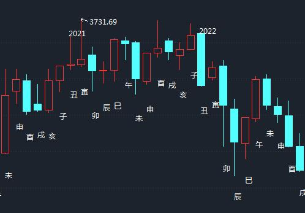
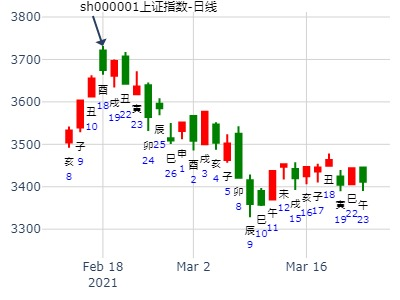
性别：男 婚否: 占事：4月1号沪市涨跌？起卦方式：手工指定
公历时间：2016年03月31日19时22分 农历时间：丙申年二月廿三戌
干 支：丙申年 辛卯月 壬子日 庚戌时 日 空：寅卯
震宫：地风升 震宫：雷风恒
六神 伏 神 【本 卦】 【变 卦】
白虎 ▅▅ ▅▅ 官鬼癸酉金 ▅▅ ▅▅ 妻财庚戌土 应
螣蛇 ▅▅ ▅▅ 父母癸亥水 ▅▅ ▅▅ 官鬼庚申金
勾陈 子孙庚午火 ▅▅ ▅▅ 妻财癸丑土 世 X ▅▅▅▅▅ 子孙庚午火
朱雀 ▅▅▅▅▅ 官鬼辛酉金 ▅▅▅▅▅ 官鬼辛酉金 世
青龙 兄弟庚寅木 ▅▅▅▅▅ 父母辛亥水 ▅▅▅▅▅ 父母辛亥水
玄武 ▅▅ ▅▅ 妻财辛丑土 应 ▅▅ ▅▅ 妻财辛丑土
丑财动化午生，先是官酉泄气，低开下探，11点之前多数是绿盘，但丑值日，最多跌不过2970
11点之后企稳开始震荡上扬，午后继续总体上涨，最终收阳，收于3020－3050点左右
600779上半年走势如何？ 起卦方式：手动摇卦。 全年涨幅第一。
公历时间：2017年3月5日8时26分
丁酉年 壬寅月 辛卯日 壬辰时
辰巳 辰巳 (午未) 午未
震宫：地风升 震宫：雷风恒
六神 伏 神 【本 卦】 【变 卦】
螣蛇 ▄▄ ▄▄ 官鬼癸酉金 ▄▄ ▄▄ 妻财庚戌土 应
勾陈 ▄▄ ▄▄ 父母癸亥水 ▄▄ ▄▄ 官鬼庚申金
朱雀 子孙庚午火 ▄▄ ▄▄ 妻财癸丑土 世X-> ▄▄▄▄▄ 子孙庚午火
青龙 ▄▄▄▄▄ 官鬼辛酉金 ▄▄▄▄▄ 官鬼辛酉金 世
玄武 兄弟庚寅木 ▄▄▄▄▄ 父母辛亥水 ▄▄▄▄▄ 父母辛亥水
白虎 ▄▄ ▄▄ 妻财辛丑土 应 ▄▄ ▄▄ 妻财辛丑土
六四：王用亨于岐山，吉无咎。象曰：王用亨于岐山，顺事也。
丑月见小顶。
年卦定性：此卦不拘起卦日月皆为兄弟。也不怕未月月破。定性为财化子。
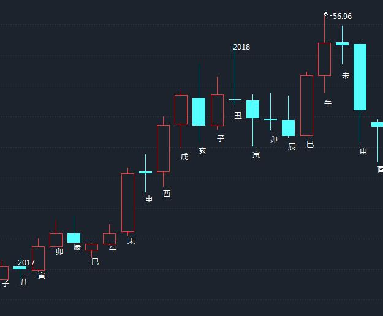
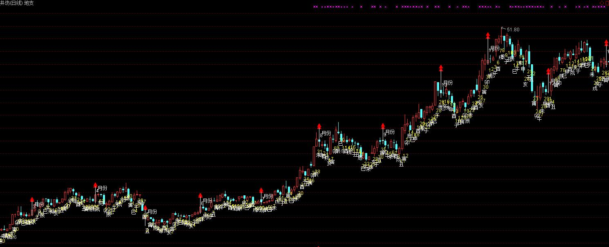
主帖标题: 下周持股能否得财
出生：没填 年 性别：男 占事：下周持有股票得财否
排卦：元亨利贞网六爻在线排盘系统 http://www.china95.net
公历起卦时间：2014年4月27日21时51分 (在线摇卦)
干支：甲午年 戊辰月 戊辰日 癸亥时 （日空：戌亥）
震宫：地风升 震宫：雷风恒
六神 伏神 本 卦 变 卦
朱雀 官鬼癸酉金 ▅▅ ▅▅ 妻财庚戌土 ▅▅ ▅▅ 应
青龙 父母癸亥水 ▅▅ ▅▅ 官鬼庚申金 ▅▅ ▅▅
玄武 子孙庚午火 妻财癸丑土 ▅▅ ▅▅ 世 ╳→ 子孙庚午火 ▅▅▅▅▅
白虎 官鬼辛酉金 ▅▅▅▅▅ 官鬼辛酉金 ▅▅▅▅▅ 世
腾蛇 兄弟庚寅木 父母辛亥水 ▅▅▅▅▅ 父母辛亥水 ▅▅▅▅▅
勾陈 妻财辛丑土 ▅▅ ▅▅ 应 妻财辛丑土 ▅▅ ▅▅
本周已经买入股票，但是不知道下周大盘啥情况，变换个方式，摇卦看看持有股票能得财不？
注：以大盘替代。巳日亥水暗动，跌。午日子孙值日。涨。30日与12日未日都是涨。
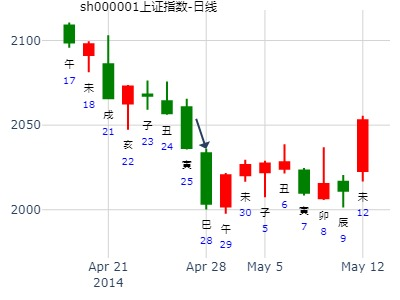
出生：没填 年 性别：男 占事：上海大盘下周13日-17日走势
公历起卦时间：2016年6月10日17时40分 (在线摇卦)
干支：丙申年 甲午月 癸亥日 辛酉时 （日空：子丑）
神煞：驿马－巳 桃花－子 日禄－子 贵人－卯，巳
震宫：地风升 震宫：雷风恒
六神 伏神 本 卦 变 卦
白虎 官鬼癸酉金 ▅▅ ▅▅ 妻财庚戌土 ▅▅ ▅▅ 应
腾蛇 父母癸亥水 ▅▅ ▅▅ 官鬼庚申金 ▅▅ ▅▅
勾陈 子孙庚午火 妻财癸丑土 ▅▅ ▅▅ 世 ╳→ 子孙庚午火 ▅▅▅▅▅
朱雀 官鬼辛酉金 ▅▅▅▅▅ 官鬼辛酉金 ▅▅▅▅▅ 世
青龙 兄弟庚寅木 父母辛亥水 ▅▅▅▅▅ 父母辛亥水 ▅▅▅▅▅
玄武 妻财辛丑土 ▅▅ ▅▅ 应 妻财辛丑土 ▅▅ ▅▅
下周行情真的会如此好~~
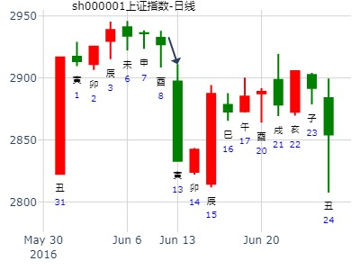
主帖标题: 分析一验卦，抛砖引玉！欢迎批评指导！
出生：2020 年 性别：男 占事：恒逸石化 6.8.--6.12日哪天是高点？
排卦：元亨利贞网六爻在线排盘系统 https://www.china95.net
公历起卦时间：2020年6月5日15时31分 (手工指定)
干支：庚子年 壬午月 己卯日 壬申时 （日空：申酉）
震宫：地风升 震宫：雷风恒
六神 伏神 本 卦 变 卦
勾陈 官鬼癸酉金 ▅▅ ▅▅ 妻财庚戌土 ▅▅ ▅▅ 应
朱雀 父母癸亥水 ▅▅ ▅▅ 官鬼庚申金 ▅▅ ▅▅
青龙 子孙庚午火 妻财癸丑土 ▅▅ ▅▅ 世 ╳→ 子孙庚午火 ▅▅▅▅▅
玄武 官鬼辛酉金 ▅▅▅▅▅ 官鬼辛酉金 ▅▅▅▅▅ 世
白虎 兄弟庚寅木 父母辛亥水 ▅▅▅▅▅ 父母辛亥水 ▅▅▅▅▅
螣蛇 妻财辛丑土 ▅▅ ▅▅ 应 妻财辛丑土 ▅▅ ▅▅午未申酉戌
姓名：姓名 出生年份：2020年 性别：男
占事:恒逸石化6.8-6.12哪天是高点？
起卦方式：手动摇卦
公历时间：2020年6月7日13时23分
干 支：庚子年 壬午月 辛巳日 乙未时
旬 空：辰巳 申酉 申酉 辰巳
艮宫：风山渐（归魂） 离宫：风水涣
六神 伏 神 【本 卦】 【变 卦】
螣蛇 ▄▄▄▄▄ 官鬼辛卯木 应 ▄▄▄▄▄ 官鬼辛卯木
勾陈 妻财丙子水 ▄▄▄▄▄ 父母辛巳火 ▄▄▄▄▄ 父母辛巳火 世
朱雀 ▄▄ ▄▄ 兄弟辛未土 ▄▄ ▄▄ 兄弟辛未土
青龙 ▄▄▄▄▄ 子孙丙申金 世O-> ▄▄ ▄▄ 父母戊午火
玄武 ▄▄ ▄▄ 父母丙午火 X-> ▄▄▄▄▄ 兄弟戊辰土 应
白虎 ▄▄ ▄▄ 兄弟丙辰土 ▄▄ ▄▄ 官鬼戊寅木
又出这种卦，晕晕啊。
1，周一午日：日月俩午火，卦内俩午火，四个午火克一个子孙申金。晕！
2，财爻子水周一月破+日破。真是个破烂，哈哈。

占事：300049七月份
时间: 2021-06-30 17时37分
干支: 辛丑年甲午月己酉日 (旬空: 寅卯 )
地风升 雷风恒
六神 伏神 本 卦 变 卦
勾陈 ▅▅ ▅▅ 官鬼酉金 ▅▅ ▅▅ 妻财戌土 应
朱雀 ▅▅ ▅▅ 父母亥水 ▅▅ ▅▅ 官鬼申金
青龙 子孙午火▅▅ ▅▅ 妻财丑土 世Ｘ→ ▅▅▅▅▅ 子孙午火
玄武 ▅▅▅▅▅ 官鬼酉金 ▅▅▅▅▅ 官鬼酉金 世
白虎 兄弟寅木▅▅▅▅▅ 父母亥水 ▅▅▅▅▅ 父母亥水
腾蛇 ▅▅ ▅▅ 妻财丑土 应 ▅▅ ▅▅ 妻财丑土
7月动态旬空子丑空，世爻旬空不受生，巳午日不一定得生？
升卦静卦怕未月破世爻。然后此卦却不怕。
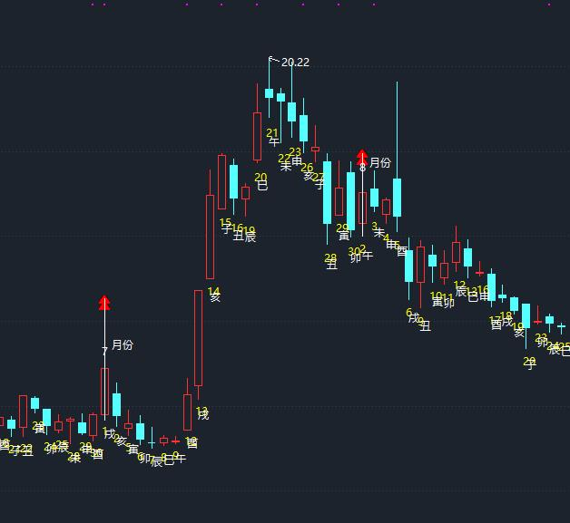
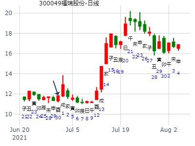
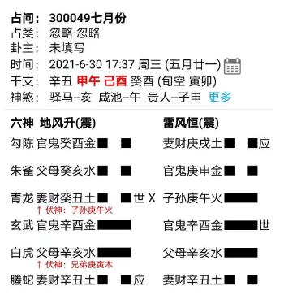
主帖标题: 听说这里很多高手,请高手们帮我看一看这个股未来一个月的走势.
出生：没填 年 性别：男
占事：点[000825]太钢不锈未来一个月走势
公历起卦时间：2007年7月3日12时39分 (在线摇卦)
干支：丁亥年 丙午月 戊戌日 戊午时 （日空：辰巳）
震宫：地风升 震宫：雷风恒
六神 伏神 本 卦 变 卦
朱雀 官鬼癸酉金 ▅▅ ▅▅ 妻财庚戌土 ▅▅ ▅▅ 应
青龙 父母癸亥水 ▅▅ ▅▅ 官鬼庚申金 ▅▅ ▅▅
玄武 子孙庚午火 妻财癸丑土 ▅▅ ▅▅ 世 ╳→ 子孙庚午火 ▅▅▅▅▅
白虎 官鬼辛酉金 ▅▅▅▅▅ 官鬼辛酉金 ▅▅▅▅▅ 世
腾蛇 兄弟庚寅木 父母辛亥水 ▅▅▅▅▅ 父母辛亥水 ▅▅▅▅▅
勾陈 妻财辛丑土 ▅▅ ▅▅ 应 妻财辛丑土 ▅▅ ▅▅
请版主们指点,谢谢!
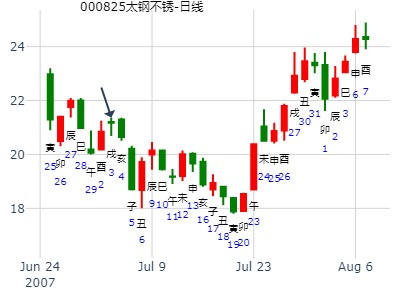
占事：7月2日期指1507的走势 方式：手工指定
公历：2015年7月2日9时1分 星期四 北京时间
干支：乙未年 壬午月 己卯日 己巳时 旬空：辰巳 申酉 申酉 戌亥
震：地风升 震：雷风恒
六神 伏 神 【本 卦】 【变 卦】
勾陈 ▅▅ ▅▅ 官鬼癸酉金 ▅▅ ▅▅ 妻财庚戌土 应
朱雀 ▅▅ ▅▅ 父母癸亥水 ▅▅ ▅▅ 官鬼庚申金
青龙 子孙庚午火 ▅▅ ▅▅ 妻财癸丑土 世×→ ▅▅▅▅▅ 子孙庚午火
玄武 ▅▅▅▅▅ 官鬼辛酉金 ▅▅▅▅▅ 官鬼辛酉金 世
白虎 兄弟庚寅木 ▅▅▅▅▅ 父母辛亥水 ▅▅▅▅▅ 父母辛亥水
螣蛇 ▅▅ ▅▅ 妻财辛丑土 应 ▅▅ ▅▅ 妻财辛丑土
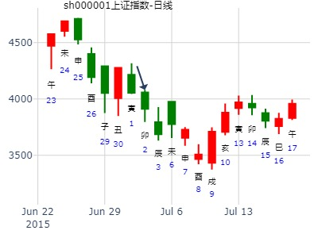
明后二天上证走势-天同
时间: 2024-07-17
干支: 甲辰年辛未月壬午日 (旬空: 申酉 )
地风升 雷风恒
六神 伏神 本 卦 变 卦
白虎 ▅▅ ▅▅ 官鬼酉金 ▅▅ ▅▅ 妻财戌土 应
腾蛇 ▅▅ ▅▅ 父母亥水 ▅▅ ▅▅ 官鬼申金
勾陈 子孙午火▅▅ ▅▅ 妻财丑土 世Ｘ→ ▅▅▅▅▅ 子孙午火
朱雀 ▅▅▅▅▅ 官鬼酉金 ▅▅▅▅▅ 官鬼酉金 世
青龙 兄弟寅木▅▅▅▅▅ 父母亥水 ▅▅▅▅▅ 父母亥水
玄武 ▅▅ ▅▅ 妻财丑土 应 ▅▅ ▅▅ 妻财丑土
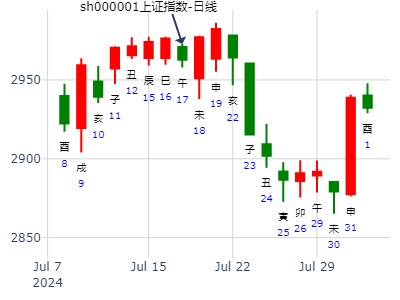
风生水起 占事：大盘下周 起卦方式：手动摇卦
公历时间：2015年8月29日9时41分
干 支：乙未年 甲申月 丁丑日 乙巳时
旬 空：辰巳 午未 (申酉) 寅卯
震宫：地风升 震宫：雷风恒
六神 伏 神 【本 卦】 【变 卦】
青龙 ▄▄ ▄▄ 官鬼癸酉金 ▄▄ ▄▄ 妻财庚戌土 应
玄武 ▄▄ ▄▄ 父母癸亥水 ▄▄ ▄▄ 官鬼庚申金
白虎 子孙庚午火 ▄▄ ▄▄ 妻财癸丑土 世X-> ▄▄▄▄▄ 子孙庚午火
螣蛇 ▄▄▄▄▄ 官鬼辛酉金 ▄▄▄▄▄ 官鬼辛酉金 世
勾陈 兄弟庚寅木 ▄▄▄▄▄ 父母辛亥水 ▄▄▄▄▄ 父母辛亥水
朱雀 ▄▄ ▄▄ 妻财辛丑土 应 ▄▄ ▄▄ 妻财辛丑土
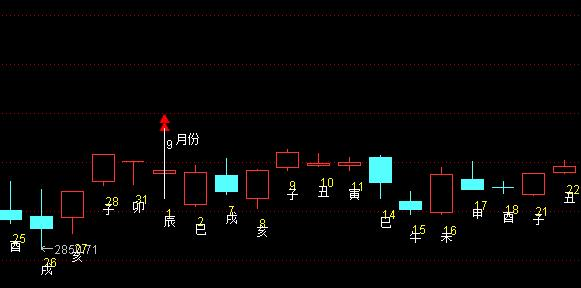
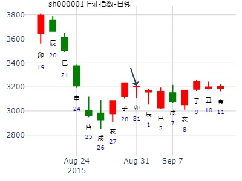
600110 二周卦。2021年8月8日 ，升之恒。
时间: 2021-08-08 8时21分
干支: 辛丑年丙申月戊子日 (旬空: 午未 )
地风升 雷风恒
六神 伏神 本 卦 变 卦
朱雀 ▅▅ ▅▅ 官鬼酉金 ▅▅ ▅▅ 妻财戌土 应
青龙 ▅▅ ▅▅ 父母亥水 ▅▅ ▅▅ 官鬼申金
玄武 子孙午火▅▅ ▅▅ 妻财丑土 世Ｘ→ ▅▅▅▅▅ 子孙午火
白虎 ▅▅▅▅▅ 官鬼酉金 ▅▅▅▅▅ 官鬼酉金 世
腾蛇 兄弟寅木▅▅▅▅▅ 父母亥水 ▅▅▅▅▅ 父母亥水
勾陈 ▅▅ ▅▅ 妻财丑土 应 ▅▅ ▅▅ 妻财丑土
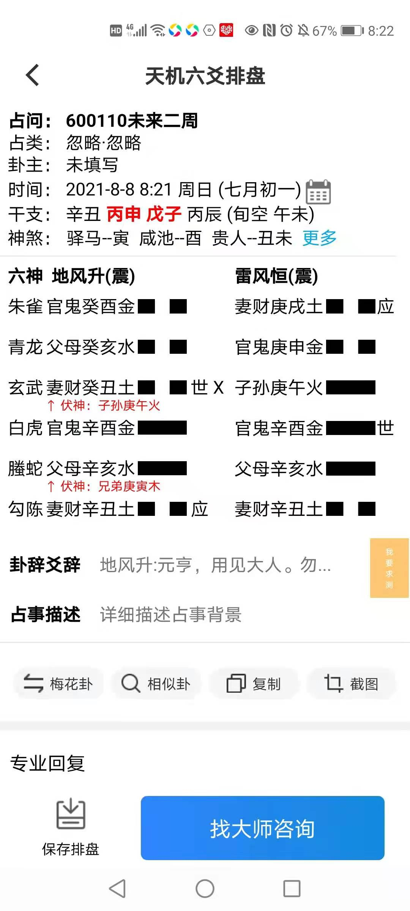
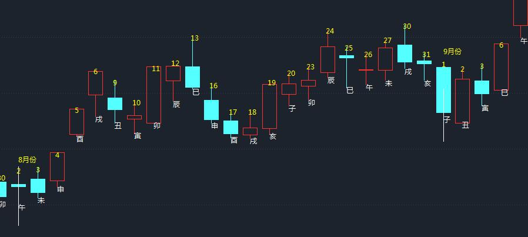
易经预测上证走势看盘交流（2014年9月12日)
起卦方式：手工指定
公历时间：2014年9月11日15时20分
干 支：甲午年 癸酉月 乙酉日 甲申时
旬 空：辰巳 戌亥 (午未) 午未
震宫：地风升 震宫：雷风恒
六神 伏 神 【本 卦】 【变 卦】
玄武 ▄▄ ▄▄ 官鬼癸酉金 ▄▄ ▄▄ 妻财庚戌土 应
白虎 ▄▄ ▄▄ 父母癸亥水 ▄▄ ▄▄ 官鬼庚申金
螣蛇 子孙庚午火 ▄▄ ▄▄ 妻财癸丑土 世X-> ▄▄▄▄▄ 子孙庚午火
勾陈 ▄▄▄▄▄ 官鬼辛酉金 ▄▄▄▄▄ 官鬼辛酉金 世
朱雀 兄弟庚寅木 ▄▄▄▄▄ 父母辛亥水 ▄▄▄▄▄ 父母辛亥水
青龙 ▄▄ ▄▄ 妻财辛丑土 应 ▄▄ ▄▄ 妻财辛丑土
六四：王用亨于岐山，吉无咎。
象曰：王用亨于岐山，顺事也。
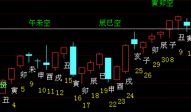
长城汽车A未来12天走势--天同
时间: 2021-09-14 9时18分
干支: 辛丑年丁酉月乙丑日 (旬空: 戌亥 )
地风升 雷风恒
六神 伏神 本 卦 变 卦
玄武 ▅▅ ▅▅ 官鬼酉金 ▅▅ ▅▅ 妻财戌土 应
白虎 ▅▅ ▅▅ 父母亥水 ▅▅ ▅▅ 官鬼申金
腾蛇 子孙午火▅▅ ▅▅ 妻财丑土 世Ｘ→ ▅▅▅▅▅ 子孙午火
勾陈 ▅▅▅▅▅ 官鬼酉金 ▅▅▅▅▅ 官鬼酉金 世
朱雀 兄弟寅木▅▅▅▅▅ 父母亥水 ▅▅▅▅▅ 父母亥水
青龙 ▅▅ ▅▅ 妻财丑土 应 ▅▅ ▅▅ 妻财丑土
此卦有意思，卦是好卦，然后接下来一二周流日大多非兄弟即父母爻。
然后到了29日以后，辰巳午均是子孙妻财助力。尤其戌月未日，不冲散丑，反而冲旺丑。
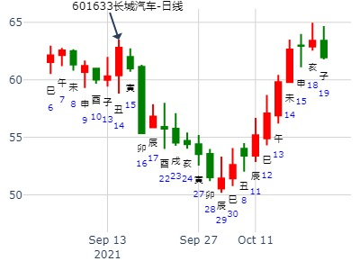
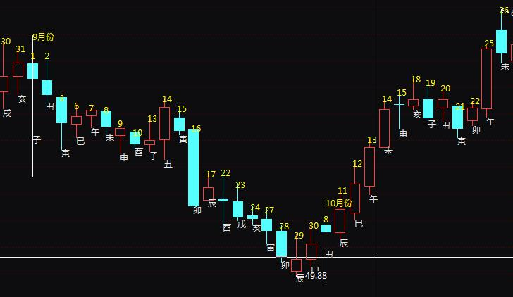
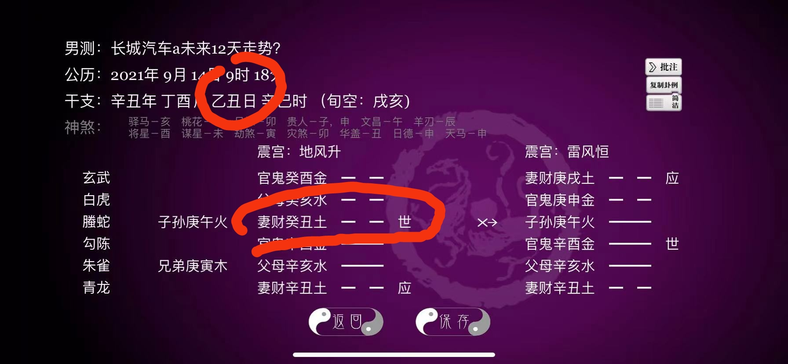
荣科科技到下周五-金玉堂自动卦
时间: 2024-10-11
干支: 甲辰年甲戌月戊申日 (旬空: 寅卯 )
地风升 雷风恒
六神 伏神 本 卦 变 卦
朱雀 ▅▅ ▅▅ 官鬼酉金 ▅▅ ▅▅ 妻财戌土 应
青龙 ▅▅ ▅▅ 父母亥水 ▅▅ ▅▅ 官鬼申金
玄武 子孙午火▅▅ ▅▅ 妻财丑土 世Ｘ→ ▅▅▅▅▅ 子孙午火
白虎 ▅▅▅▅▅ 官鬼酉金 ▅▅▅▅▅ 官鬼酉金 世
腾蛇 兄弟寅木▅▅▅▅▅ 父母亥水 ▅▅▅▅▅ 父母亥水
勾陈 ▅▅ ▅▅ 妻财丑土 应 ▅▅ ▅▅ 妻财丑土
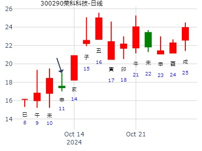
主帖标题: 歪打正着
今天准备买入000157，于是在股软中奌击数理卦指标,一看是
庚子 丁亥 乙丑 庚辰 (戌亥空) 庚子年十月初四(2020/11/18 08:41:47)
地风升 雷风恒
玄武 官鬼酉金 ∥ 妻财戌土 ∥ 应
白虎 父母亥水 ∥ 官鬼申金 ∥
子孙午火：腾蛇 妻财丑土 × 世 子孙午火 ／
勾陈 官鬼酉金 ／ 官鬼酉金 ／ 世
兄弟寅木：朱雀 父母亥水 ／ 父母亥水 ／
青龙 妻财丑土 ∥ 应 妻财丑土 ∥
于是逢低买入,当下午拉升时,再到股软中去看卦,发现昨天是
庚子 丁亥 丙寅 壬辰 (戌亥空) 庚子年十月初五(2020/11/19 08:41:47)
山天大畜 山泽损
青龙 官鬼寅木 ／ 官鬼寅木 ／ 应
玄武 妻财子水 ∥ 应 妻财子水 ∥
白虎 兄弟戌土 ∥ 兄弟戌土 ∥
子孙申金：腾蛇 兄弟辰土 ○ 兄弟丑土 ∥ 世
父母午火：勾陈 官鬼寅木 ／ 世 官鬼卯木 ／
朱雀 妻财子水 ／ 父母巳火 ／
而前天才是 地风升 之 雷风恒
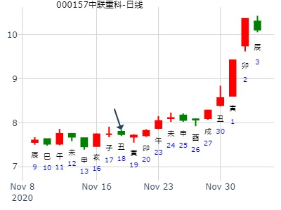
注：此数理卦不敢苟同
主帖标题: 手摇 芯片 未来一月 11月30日
公历：2020年11月29日12时51分，星期日。
干支：庚子年 丁亥月 丙子日 甲午时 (卦身：酉)
主变卦 地风升(震宫) 之 雷风恒(震宫) [空亡:申、酉]
青龙 ▅▅ ▅▅ 官鬼癸酉金 ▅▅ ▅▅ 妻财庚戌土 应
玄武 ▅▅ ▅▅ 父母癸亥水 ▅▅ ▅▅ 官鬼庚申金
白虎 子孙庚午火 ▅▅ ▅▅×妻财癸丑土 世 ▅▅▅▅▅ 子孙庚午火
螣蛇 ▅▅▅▅▅ 官鬼辛酉金 ▅▅▅▅▅ 官鬼辛酉金 世
勾陈 兄弟庚寅木 ▅▅▅▅▅ 父母辛亥水 ▅▅▅▅▅ 父母辛亥水
朱雀 ▅▅ ▅▅ 妻财辛丑土 应 ▅▅ ▅▅ 妻财辛丑土
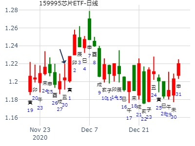
主帖标题: 11/11创业板 今日创业板指
姓名：入定观 出生年: 性别：男 占事：
起卦方式：手动摇卦
公历时间：2022年11月11日7时28分
干 支：壬寅年 辛亥月 戊辰日 丙辰时
旬 空：辰巳 寅卯 戌亥 子丑
震宫：地风升 震宫：雷风恒
六神 伏 神 【本 卦】 【变 卦】
朱雀 ▄▄ ▄▄ 官鬼癸酉金 ▄▄ ▄▄ 妻财庚戌土 应
青龙 ▄▄ ▄▄ 父母癸亥水 ▄▄ ▄▄ 官鬼庚申金
玄武 子孙庚午火 ▄▄ ▄▄ 妻财癸丑土 世 × ▄▄▄▄▄ 子孙庚午火
白虎 ▄▄▄▄▄ 官鬼辛酉金 ▄▄▄▄▄ 官鬼辛酉金 世
螣蛇 兄弟庚寅木 ▄▄▄▄▄ 父母辛亥水 ▄▄▄▄▄ 父母辛亥水
勾陈 ▄▄ ▄▄ 妻财辛丑土 应 ▄▄ ▄▄ 妻财辛丑土
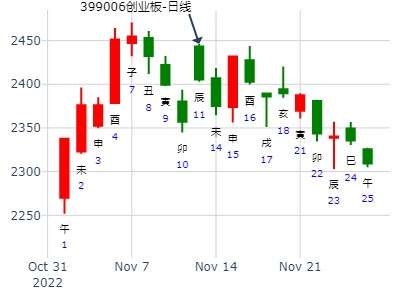
主帖标题: 下周大盘？
2022年11月25日20时29分 升之恒
干支：壬寅年 辛亥月 壬午日 庚戌时 （日空：申酉）
神煞：驿马－申 桃花－卯 日禄－亥 贵人－卯，巳
震宫：地风升 震宫：雷风恒
六神 伏神 本 卦 变 卦
白虎 官鬼酉金 ▅▅ ▅▅ 妻财戌土 ▅▅ ▅▅ 应
螣蛇 父母亥水 ▅▅ ▅▅ 官鬼申金 ▅▅ ▅▅
勾陈 子孙午火 妻财丑土 ▅▅ ▅▅ 世 ╳→ 子孙午火 ▅▅▅▅▅
朱雀 官鬼酉金 ▅▅▅▅▅ 官鬼酉金 ▅▅▅▅▅ 世
青龙 兄弟寅木 父母亥水 ▅▅▅▅▅ 父母亥水 ▅▅▅▅▅
玄武 妻财丑土 ▅▅ ▅▅ 应 妻财丑土 ▅▅ ▅▅